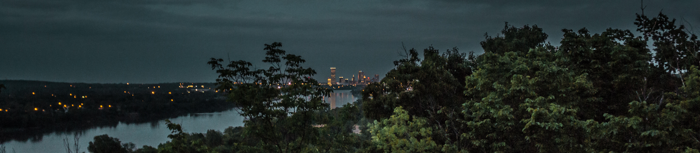

Nobody warns you that Oklahoma in December turns into a Hallmark movie with better bone structure. There's an ice rink downtown. There's a half-million-light botanical garden twenty minutes from the Arts District. There's a nightclub throwing a New Year's Eve party with a champagne toast at midnight, which is more coordinated planning than most of us manage for our own apartments. The holidays here are not a consolation prize for not living somewhere glossier. They are, improbably, a whole production, and gay Tulsa shows up for every bit of it.
This is the guide for what to actually do between Thanksgiving and New Year's Day if you want queer joy, good lighting, and at least one night out that doesn't involve making small talk with your cousin's husband about the HOA. Addresses, dates we could confirm, and the honest truth about which traditions repeat every year versus which ones you'll need to double-check closer to the date.
The Season at a Glance
Three fixed points anchor gay Tulsa's December: the downtown ice rink at Winterfest, the Botanic Garden of Lights out at the Tulsa Botanic Garden, and Club Majestic's New Year's Eve party, which has become the de facto queer countdown in this city. Layer in a holiday-week drag show at the Eagle or YBR, a December Elote brunch, and a drop-in visit to the Equality Center, and you've got a season that holds up against any city twice our size.
Winterfest Downtown: An Ice Rink Oklahoma Didn't Need But Got Anyway
The Botanic Garden of Lights: Where to Take a Date Who Still Believes in Magic
Gathering Place Goes Full Hallmark (In a Good Way)
Gathering Place on the river gets a full holiday glow-up every December, with free photos with Santa, seasonal décor, crafts, and a lodge that turns into the coziest indoor space in the city once the temperature actually commits to being winter. It's free, it's gorgeous, and it's the one holiday outing in this guide you can do with a crew of friends, a date, or entirely alone with a hot chocolate and zero explanations required. Check their calendar for exact dates and times, since Santa's schedule is, understandably, a tightly held secret each year.
Club Majestic's New Year's Eve: How Gay Tulsa Actually Rings It In
The Eagle, YBR, and Elote: What Holiday Week Looks Like at the Regulars
The Tulsa Eagle and Yellow Brick Road don't shut down for the holidays, and honestly, that consistency is its own gift. Expect their regular drag and karaoke rotation to keep running through December with the occasional holiday-themed special thrown in, the exact lineup changes year to year, so follow @tulsaeagle and @ybrtulsa for the week-of details rather than trusting anyone's secondhand memory, including mine. Elote's drag brunch keeps its usual second-Saturday schedule straight through the season too, so a December brunch is very much still on the table, reservation strongly recommended given how popular the holiday crowd makes it.
If the Season Gets Heavy
The greeting cards skip this part: the holidays are not universally joyful for queer people, especially anyone navigating a complicated family, a recent transition, or a first Christmas somewhere new. Oklahomans for Equality keeps its doors open at the Dennis R. Neill Equality Center all season, with support groups and a staff that has heard every version of "I don't know how to go home for this" and still shows up to help. If you need a service and a congregation that will not make you explain yourself, our affirming churches guide covers Tulsa's open and affirming options, several of which run candlelight services worth attending even if church isn't usually your thing.
Your December Weekend, Mapped Out
Friday Night
- Dinner in the Blue Dome district, then straight to Winterfest for a skate and the tree lighting glow
- Hot chocolate from a Winterfest Express stop, because you earned it after falling twice
Saturday
- Brunch at Elote if it's a second Saturday, drag included
- Afternoon drive out to the Botanic Garden of Lights, arrive right at opening to beat the crowds
- Nightcap at YBR or the Eagle, whichever crowd you're in the mood for
December 31st
- Early dinner, because the night belongs to Club Majestic
- Arrive by 9pm, dressed to be seen, ready for the countdown
- Champagne toast at midnight, then let the new year earn its reputation
None of this requires you to be anywhere else. Gay Tulsa in December is a full, warmly lit, slightly over-decorated season all its own, and it's happening twenty minutes from wherever you are, not somewhere you have to fly to find it.
Find It
Winterfest: 3rd St & Denver Ave, Tulsa, OK 74103 (near BOK Center)
Tulsa Botanic Garden: 3900 Tulsa Botanic Dr, Tulsa, OK 74127
Know something we don't?
Got a holiday event, venue, or org we should be covering? Hit submit and we'll add it.
Submit an Event →